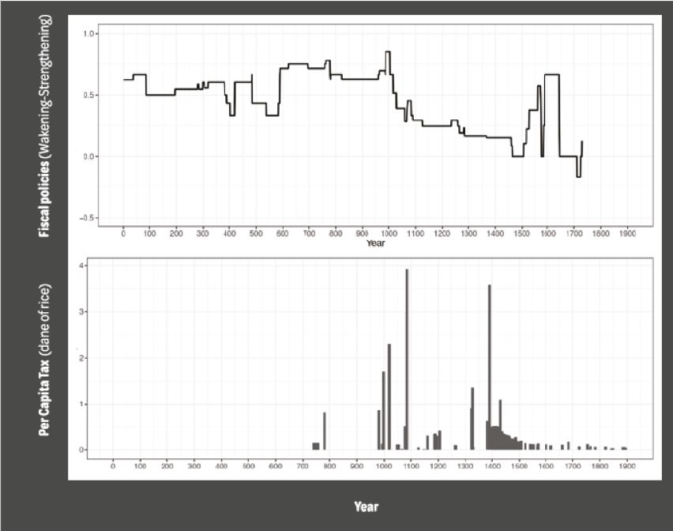
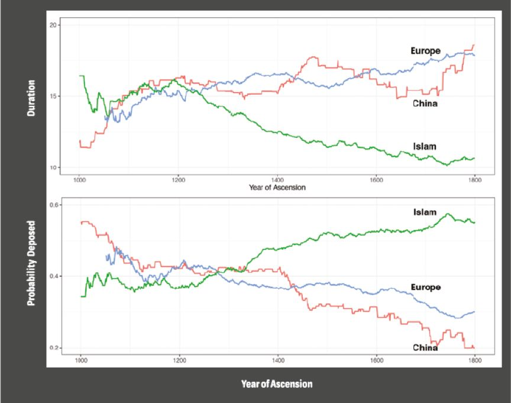
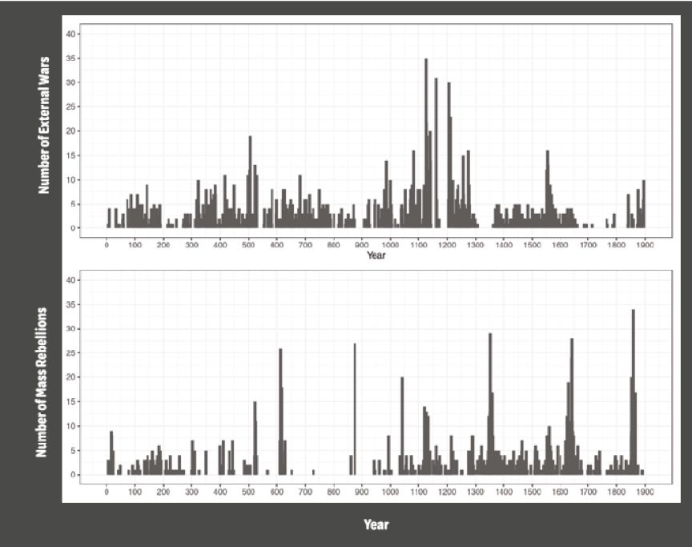

收录于合集
#历史政治学 58 个
#国家建构与国家发展 70 个
文献来源：Yuhua Wang, “China’s State Development in Comparative Historical Perspective,” Newsletter of the Organized Section in Comparative Politics of the American Political Science Association , 29(2), Fall 2019, pp.50-57.
作者简介：王裕华：北京大学政府管理学院本科、硕士，密歇根大学政治学博士，现任哈佛大学政府系副教授。
在20世纪初，中国的国家崩溃令人意外。中国是国家建构的先行者：在公元前221年中国建立了世界上最早的中央集权化的官僚制，比罗马帝国还早了200年。在7世纪，中国一度占据了世界经济总量的1/4（Maddison 2007, 381），同时中国还是世界上第一个通过考试来选拔官员的国家。韦伯（Max Weber）对中国的科举考试进行了非常详细的描述，并且成为他对现代官僚制—“韦伯式”官僚制—定义的重要组成部分（Weber 1946 [1918], 241; Evans and Rauch 1999, 751）。
在那时，西欧在经历持续性的错位、危机和分裂。在罗马帝国衰落、卡洛林帝国尚未形成的那段时间内，商业几乎消失，欧洲君主几乎不能维持任何提供薪水的行政管理（Barraclough 1976, 10）。在中世纪，欧洲的精英主要通过对封建头衔的世袭来获得地位，直到19世纪才形成了相应的精英选拔制度。
为什么中国这样一个早期官僚国家却在后来遭到了命运的逆转？
在这篇文章中，我试图描述并解释中国国家兴衰的奥秘。我先讨论两个关于国家发展的解释——经济发展和战争——的不足之处。在此基础上，我给出了自己的解释：科举考试将中国的精英从一个共容性利益集团转变为狭隘性利益集团。最初，精英促成了国家能力的兴起，但精英的转变又导致了国家能力的下降乃至衰落。
历史视野能帮助我们发现短期框架中不能发现的持续性和变化。国家，像大多数制度那样，需要时间来发展。中国，在几百年中兴起，又在几百年中衰落。因此，研究短期变化会有“只见树木，不见森林”的困境。正如齐布莱特（Daniel Ziblatt）指出的那样，时间上的距离——将单一事件抽出并将它放置在长时段的框架中——能发现以前没有发现的规律（Ziblatt 2017, 3）。
中国这一案例在比较政治上有巨大的研究价值。过去大多数研究政治发展的文献都关注于欧洲。然而欧洲可能是个例外，其政治发展路径可能是偶然的、不具代表性的（Stasavage 2016,146）。而历史上中国的发展对当代发展中国家更有借鉴意义：两者都以农业经济为载体、充斥暴力、家族统治根深蒂固，以及国家能力较弱。尽管历史并不会重演，但经常似曾相识。我们可以从历史发展中总结规律以考查当代的案例。正如我在结论中指出的那样，历史上中国的发展为我们理解当下中国以及其他发展中国家提供了更广泛的经验。
中国国家的兴衰
图1展示了从公元0年到公元1900年之间中国财政的发展。其中，图的上半部分展现了中国历代主要财政政策的演变。我根据历史学家的判断—是否是强化（+1）、不变（0）或者削弱（-1）国家税收能力—对每个政策进行编码。图的下半部分则呈现了根据历史记录估算的人均税负。两个图都显示中国的财政能力在11世纪达到高峰，随后开始下降（尽管仍然有偶尔的增长），并且在最后一段时期走向崩解。

图1 中国的财政政策（上）与人均税负（下），
公元0年—公元1900年
中国的财政发展与欧洲比较起来很有意思。公元1086年，中国的财政能力达到顶峰——财政收入占GDP的比重是英格兰的10倍（Stasavage Forthcoming）。但是在19世纪初，英格兰的税收已经达到其GDP的15%-20%，而同期中国的税收只占GDP的1%（Guo 2019）。
另一个有意思的比较是君主在位时间。图2展示了中国、欧洲和伊斯兰世界君主在位时间的比较。尽管中国的国家能力在下降，但中国君主与欧洲君主的在位时长相当。同时，中国与欧洲君主的在位时间都远长于伊斯兰世界的君主。换言之，中国国家能力在变弱，君主在位时间却在变长。

图2 中国、欧洲与伊斯兰世界君主的在位时间（上）与被推翻的概率（下），
公元1000年-公元1800年
国家发展的标准解释
应该如何解释历史上中国的国家兴衰？既有文献指出，经济增长和战争动员分别解释了国家制度的形成。但我要指出这些经典的解释并不能完全解释中国的案例。
经济增长
现代化理论指出，随着经济的发展，社会将对国家提出更多的需求。国家将对社会的公共产品和服务需求做出回应，这种回应需要以财税汲取和公共财政为依托。
但是历史证据表明中国的经济发展是国家发展的结果，而不是国家发展的前提。加州学派认为直到1500年，中国还是世界经济的领航者。在文艺复兴之前，欧洲经济远远落后于中国，直到1800年才超过中国（Pomeranz 2000; Wong 1997）。因此，中国的经济衰退似乎在国家衰落之后。新制度主义经济学认为经济发展需要国家对秩序和产权的保护与这一关系是一致的（North 1981; Acemoglu and Robinson 2012）。
战争
对外战争与内部冲突都能“制造”国家。中世纪的欧洲对外战争成本越来越高。君主必须从社会中汲取资源，建立中央集权化的官僚制来管理国家财政并且将地方武装团体置于国家军队的控制之下（Tilly 1975）。内部冲突也能促进国家发展。底层暴动对财富再分配的需求会促使精英抛开自己狭隘的利益，达成了集体性的“保护协定”：精英结成联盟以国家力量来防止大规模的人民起义（Slater 2010,5–7）。
但是中国的战争比欧洲更多，从公元1000到公元1799年，整个欧洲发生了850起战争，而同时期的中国则经历了1470起冲突（Dincecco and Wang 2018: 343）。
此外，如果对外或者内部的战争能解释国家的发展，我们应该能看到国家能力在冲突的同时或者之后加强了。图3显示了从公元0年到公元1900年之间中国对外战争（上）和农民起义（下）的数量。

图3 中国的对外战争（上）和农民起义（下），
公元0年—公元1900年
中国对外战争在时序上的特征挑战了蒂利（Charles Tilly）“冲突促使国家向公民征税、建立官僚制、组建常备军”的观点。在12-13世纪时间，中国对外战争的数量达到顶峰，但是国家的财政政策却在此时开始衰落。与之相似，从14世纪中期到19世纪晚期，农民起义频发，而税收却持续下降。
精英转型与国家发展
中国国家兴衰的转折点在11世纪。那时，中国的中原地区处于北宋的统治之下。面临北方的契丹（Khitan）和党项（Tangut）等游牧民族政权的威胁，战争一触即发。
1065年，北宋80%的收入用于国防开支，导致了政府第一次财政危机。政府从市场中招募的尽是些年老的、缺乏经验的士兵，不适合集体作战（编注：北宋的兵制并非纯粹只有军事功能，其还带有一定程度的维护社会稳定与提供福利的作用。在凶年饥岁，国家会在灾区大量招募破产农民，并诏安盗贼、收编罪犯为兵，即所谓“除盗恤饥”）。
四年后，宋神宗赵顼和宰相王安石发起了加强国家财政能力与建立常备军的变法。他们对全国土地开展清丈，核实土地所有者，以便查明地主隐匿的财产，收取田赋（方田均税法）。这场变法同时也意图消灭私人武装，组织人口到国家军队中服役（保甲法）。
宋神宗和王安石是国家建设者：当北宋面临严重的外部威胁时，他们试图来“制造”国家。但是很多保守派大臣反对变法并且让高太后出面来支持他们。不仅如此，朝中反对变法的大臣对王安石群起而攻之，地方官吏则破坏新法并搁置其实施（编注：高后作为英宗的皇后，是神宗之母，英宗在至和末年得以继位，与司马光、文彦博等人关系甚大；而高后垂帘依然是依靠司马光、吕公著、文彦博等人支持，高后与司马光等反对新法者的渊源深厚，并非自然反对新法。而反对派官僚对于新法的态度也不尽相同，并非全盘否定。吕公著作为元祐时代的重要主政者，也不赞同完全推翻新法，而是要渐进式更改。同样的，苏轼在熙宁出任地方官时，也并不抵制推行新法，而是在施政中充分贯彻了变法的方针）。1073年，北方发生大旱，流民四窜，朝中大臣深以为是天降灾异，纷纷上书神宗这是王安石变法造成的，王安石被迫于1074年辞去相位，变法的批评者们趁机对改革大加挞伐，并试图说服迷信的神宗皇帝终止变法。随后，保守派又阻止了多项改革。1085年神宗驾崩，旧党领袖司马光在拜相后就完全废除了新法。
查尔斯·蒂利可能会好奇：面临如此严峻的外部危机，为什么精英们反对国家能力的提升？宏观的结构因素不能解释精英群体中个人层面的差异。因此，我提出一个新的解释框架。
购买还是制造，这是一个问题
我的解释框架建立于精英需要保护的假设。这些保护包括防御外部入侵和内部暴力、对天灾的赈灾以及保护风险的社会政策等一系列服务。
精英可以通过两种渠道来获取保护。他们可以通过缴税来从国家那里“购买”公共保护。他们也可以依赖私人机构，如家族，来“制造”私人保护。公共保护具有规模经济和范围经济的特征，所以保护额外区域的边际成本微不足道。如果精英需要大规模的保护，“购买”保护会很划算。而私人保护有单位成本，由于私人保护的排他性，每保护1个区域需要付出一个区域的价格。比如，如果保护1个区域（比如100平方公里）需要1个驻军点，消耗1个单位的劳力和资本，那么保护2个区域就需要2个单位的劳力和资本。如果精英只需要保护相当小的一块地区，那么私人保护显然更加划算，因为与通过缴税来支持官军相比，私人武装保护小规模地区的成本更低。同时，在某种程度上，“制造”属于自己保护地也给予精英相对于国家的一些独立性。
这一简单的逻辑表明精英对国家建构的支持取决于他们社会网络的地域跨度。如果他们需要保护地理规模跨度大的社会网络，他们就更愿意支持建立一个能力强的中央政府。这些精英就是奥尔森所说的共容性利益集团（Olson 1982, 48）。如果他们需要保护地域规模较小的网络，那么他们就更愿意依赖私人保护，并且反对强化国家能力的政策。这些精英就是奥尔森所说的狭隘性利益集团（Olson 1982, 48）。
从共容性利益到狭隘性利益
将这一框架应用到中国历史案例中，我们现在可以理解为什么自11世纪以降，中国的国家能力开始走向衰落。
从公元7世纪到9世纪，中国由世袭门阀统治。这些门阀由两三百个世族组成，位列皇帝御准的郡望名录中。皇帝几乎完全根据这个名单来招录官员，并且这些家族的后人还可以世袭他们父辈的职位。尽管这些门阀大族分散在全国各地，但是他们核心的男性成员通过彼此联姻组成了全国性的精英联盟。终唐一代（公元618年—公元904年），这些家族定居在长安和洛阳并且成为一个自我繁殖的精英阶层（Tackett 2014, 25）。
因此，在11世纪之前，一个跨区域的精英网络统治着中国。因为他们的家族网络分布全国各地，他们有很强的动机去建立强大的中央国家来保护他们的家族利益。这些精英组成了共容性利益集团。
但是晚唐时发生的黄巢起义（公元874年—公元884年）攻占了首都长安并且屠杀了绝大部分的门阀大族成员（Tackett 2014, 187-234）。在此之后，以前只能担任低级官僚的地方士绅家族，就开始填充到了门阀大族灭亡后留下的权力真空（编注：安史之乱后科举而非门荫入仕或杂色入流成为选拔高等官吏的主要途径，但与宋代不同，唐代科举的请托舞弊现象严重，且同时及第者抱团结党，而科举更不是与门阀截然对立的制度，门阀大族和寒族虽然都可以通过这种渠道入仕，但相对来说机会并不均等，寒庶缺少政治资源与靠山，难以进取。所以呈现的状况仍是高门大族控制着高级职位。根据毛汉光先生统计，唐代宰相人数为366人，其中王崔郑等大士族产生者为186人，有一半以上；宋德熹教授也通过统计指出，宣宗懿宗时代科举进仕者93%仍为士族，占据了绝对优势。）
在门阀大族衰落之后，宋代皇帝开始系统性地利用科举考试招募官员。在这一时期，潜在的候选人必须获得地方士绅的推荐才能参加乡试（Hartwell 1982, 419）。因此，科举考试促使地方家族采取与当地有权望的士绅联姻的策略，以声望与政治机会来交换经济利益。而后，科举考试使得许多地方精英进入到中央政府当中。这些精英是“地方利益保护者”，通过他们在中央政府的权力和关系影响中央政府的政策，以保护地方的利益（Hymes 1986, 127–128）。
一旦在地方上盘根错节的精英们进入到中央政府后，他们不再支持一个强大的中央国家。他们更倾向于使用私人组织来保护他们的家族利益。他们开始加强家族组织，通过修撰族谱将具有共同祖先的宗族成员联系起来（Faure 2007, 68），他们通过介入国家事务来为自己的家乡谋利（Beattie 1979, 72）。相应的是，这些人的家族成员也陆续成为地方强人，能组织防务，修缮堤坝并且捐资学校（Zheng 2008, 183–194）。在帝制中国的晚期，这些精英变成了狭隘性利益集团。
随着精英的社会网络日渐地方化，精英们也变得碎片化起来；他们很难再组织跨区域的集体行动。一个破碎化的精英导致了皇权统治变得专制化，因为统治者更容易对他们分而治之，从而各个击破。历史学家指出随着皇帝相对于宰辅地位的不断上升，有宋一代皇帝的专制性权力在不断强化（Hartwell 1982, 404–405）。这一趋势在之后的朝代得到了进一步强化。在14世纪晚期，明太祖完全废除了中央政府中的宰相制度，集大权于一身（Hucker 1998,74–75）。这也解释了为什么后来中国君主在位时间不断加长。
因此，专制性的君主与拥有狭隘利益的精英形成了一种自我强化的均衡状态：君主越来越安全，精英越来越倾向于通过影响国家政策来保护他们的地方利益并且乐于享受其独立性。然而这种均衡状态最终导致了中国的衰落。
以史为鉴
作为结论，中国的历史经验对当代中国和发展中国家具有两条相当重要的经验。首先，它有助于我们理解中国的执政党在现代国家建设方面取得的成就。中国执政党建国成功的原因在于20世纪中期通过社会革命对地主实现了消灭或改造，通过土地改革将地主土地收归国有。与此同时，一场长期并且艰苦卓绝的革命促成了跨区域的党内精英网络的形成。这一精英团体最终在全国范围内赢得了胜利并且建立起了向心力极强的政治结构。
其次，很多发展中国家现在面临着类似的挑战：地方家族挑战国家权力。国际组织，如世界银行、国际货币基金组织，都希望通过行政改革，比如引入公务员考试，以加强国家能力。但是中国的经验表明，国家能力弱是一个社会问题，并不能单纯通过行政改革加以解决。当中国的皇帝开始通过科举制选拔官员时，中国精英就变得越碎片化并且反对国家能力的提升。这一经验说明建立一个强国家需要实现社会变革，但现在的国际援助项目都忽视了这一点。
全文参考文献略
感谢王裕华教授拨冗审校！
翻译：杨端程
编注：秦汉元
编辑：郭静远
【政文观止Poliview】系头条号签约作者